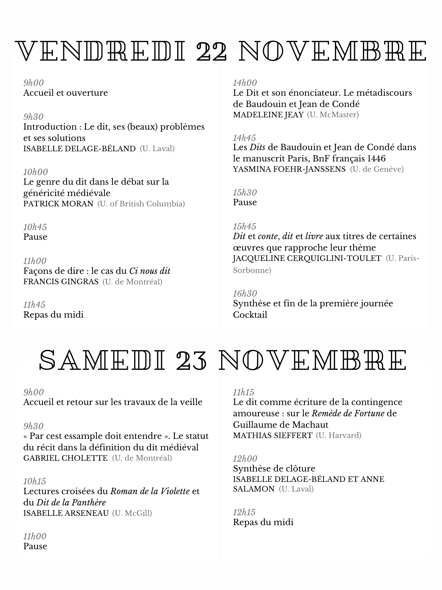

Colloque

Affiche réalisée par Raphaëlle Décloître.
Informations utiles
Le colloque se déroulera les 22 et 23 novembre 2019 dans la salle DKN-5242 (5e étage) l’Institut d’études anciennes et médiévales de l’Université Laval (IÉAM).
Adresse
Pavillon Charles-De Koninck 1030 Avenue des Sciences Humaines Université Laval Québec (Québec) G1V 0A6
Pour se rendre à l'Institut d'études anciennes et médiévales se rendre au 5e étage; prendre à gauche en sortant de l'ascenseur ou tourner à droite dans le hall Emile-Nelligan depuis les escaliers.